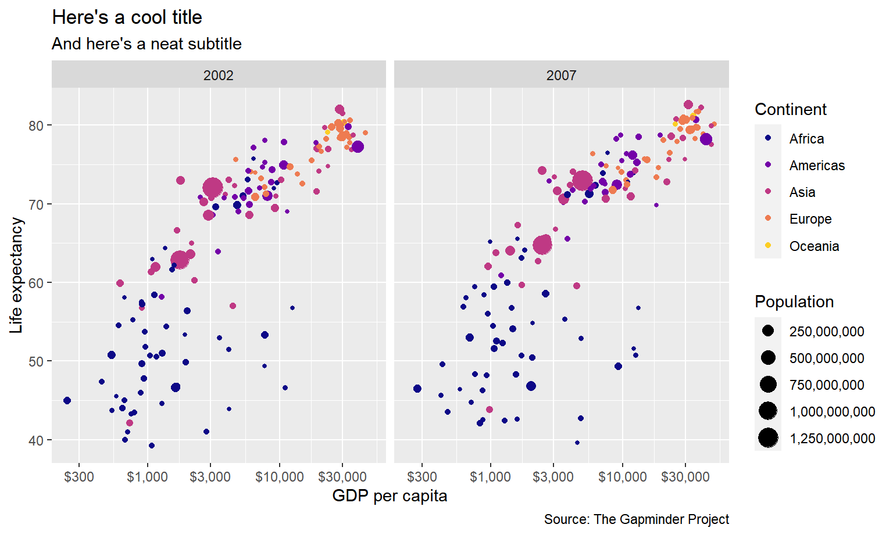
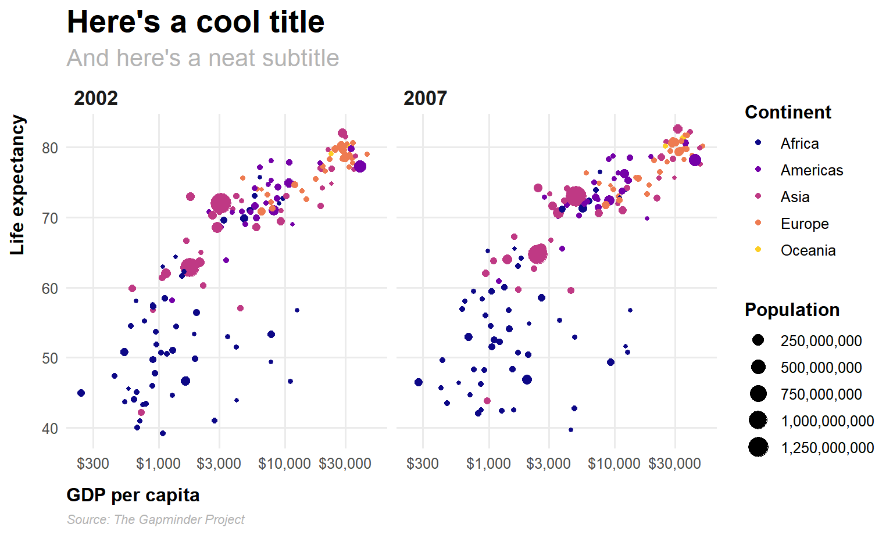
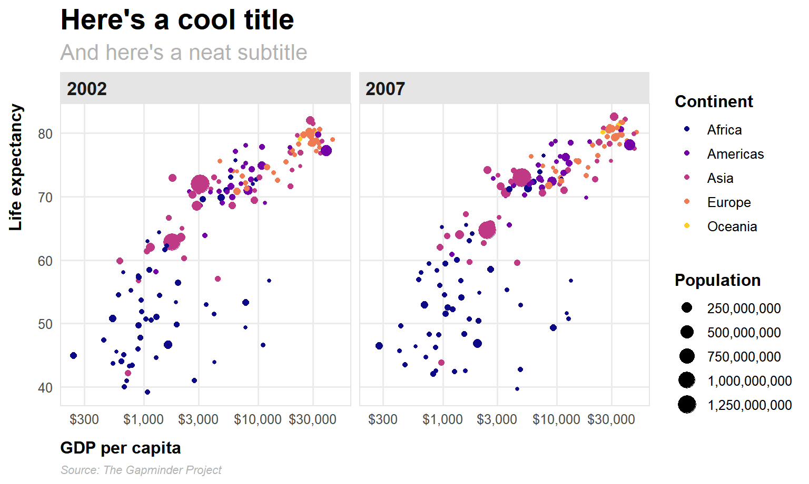
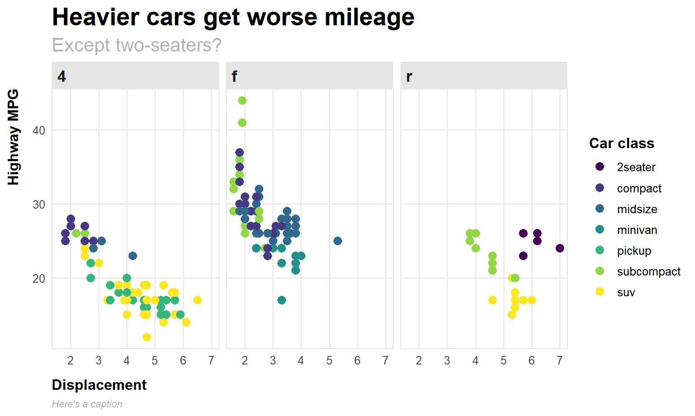

For your exercise, you’re going to create the world’s ugliest plot. For this example, we’ll use the principles of CRAP to make a great theme.
I’m going to build the theme semi-incrementally here. Instead of showing how the plot updates with each change in setting, I do most of the updates all at once, with tons of comments explaining what each line does. Importantly, I did not write this all at once. When you’re tinkering with themes, you generally start with something like theme_minimal() or theme_bw() and then gradually add new things to theme(), like modifying plot.title, then plot.subtitle, etc. It’s a very iterative process with lots of tinkering. Because of this, there is no live-coding video for this example—it would be incredibly long and boring. Instead, look through each of the lines and see what they’re doing.
For this example, I’m going to use the gapminder dataset that we’ve been using throughout this week. Instead of using the CSV file like we did before, we’ll load the data from the {gapminder} package. Once you run library(gapminder), you’ll automatically have access to a dataset named gapminder.
I’m also going to use the Roboto Condensed font in the theme. Download and install it on your computer if you don’t have it.
Basic plot
When I’m creating a theme, I like to use a basic plot with everything that might show up, complete with a title, subtitle, caption, legend, facets, and other elements.
Code
library(tidyverse) # For ggplot, dplyr, and friendslibrary(gapminder) # For gapminder datalibrary(scales) # For nice axis labelsgapminder_filtered <- gapminder %>%filter(year >2000)base_plot <-ggplot(data = gapminder_filtered,mapping =aes(x = gdpPercap, y = lifeExp, color = continent, size = pop)) +geom_point() +# Use dollars, and get rid of the cents part (i.e. $300 instead of $300.00)scale_x_log10(labels =label_dollar(accuracy =1)) +# Format with commasscale_size_continuous(labels =label_comma()) +# Use viridisscale_color_viridis_d(option ="plasma", end =0.9) +labs(x ="GDP per capita", y ="Life expectancy",color ="Continent", size ="Population",title ="Here's a cool title",subtitle ="And here's a neat subtitle",caption ="Source: The Gapminder Project") +facet_wrap(vars(year))base_plot

Now we have base_plot to work with. Here’s what it looks like with theme_minimal() applied to it:
Code
base_plot +theme_minimal()
That gets rid of the grey background and is a good start, but we can make lots of improvements. First let’s deal with the gridlines. There are too many. We can get rid of the minor gridlines with by setting them to element_blank():
This only takes effect for your current R session, so if you are knitting a document or if you ever plan on closing RStudio, you’ll need to incorporate this font creation code into your script.
We’ll use the font as the base_family argument. Note how I make it bold with face and change the size with rel(). Instead of manually setting some arbitrary size, I use rel() to resize the text in relation to the base_size argument. Using rel(1.7) means 1.7 × base_size, or 20.4 That will rescale according to whatever base_size is—if I shrink it to base_size = 8, the title will scale down accordingly.
Code
plot_with_good_typography <- base_plot +theme_minimal(base_family ="Roboto Condensed", base_size =12) +theme(panel.grid.minor =element_blank(),# Bold, bigger titleplot.title =element_text(face ="bold", size =rel(1.7)),# Plain, slightly bigger subtitle that is greyplot.subtitle =element_text(face ="plain", size =rel(1.3), color ="grey70"),# Italic, smaller, grey caption that is left-alignedplot.caption =element_text(face ="italic", size =rel(0.7), color ="grey70", hjust =0),# Bold legend titleslegend.title =element_text(face ="bold"),# Bold, slightly larger facet titles that are left-aligned for the sake of repetitionstrip.text =element_text(face ="bold", size =rel(1.1), hjust =0),# Bold axis titlesaxis.title =element_text(face ="bold"),# Add some space above the x-axis title and make it left-alignedaxis.title.x =element_text(margin =margin(t =10), hjust =0),# Add some space to the right of the y-axis title and make it top-alignedaxis.title.y =element_text(margin =margin(r =10), hjust =1))plot_with_good_typography## Warning in grid.Call(C_stringMetric, as.graphicsAnnot(x$label)): font family## not found in Windows font database## Warning in grid.Call(C_stringMetric, as.graphicsAnnot(x$label)): font family## not found in Windows font database## Warning in grid.Call(C_textBounds, as.graphicsAnnot(x$label), x$x, x$y, : font## family not found in Windows font database## Warning in grid.Call(C_textBounds, as.graphicsAnnot(x$label), x$x, x$y, : font## family not found in Windows font database## Warning in grid.Call(C_stringMetric, as.graphicsAnnot(x$label)): font family## not found in Windows font database## Warning in grid.Call(C_textBounds, as.graphicsAnnot(x$label), x$x, x$y, : font## family not found in Windows font database## Warning in grid.Call(C_textBounds, as.graphicsAnnot(x$label), x$x, x$y, : font## family not found in Windows font database## Warning in grid.Call(C_textBounds, as.graphicsAnnot(x$label), x$x, x$y, : font## family not found in Windows font database## Warning in grid.Call(C_textBounds, as.graphicsAnnot(x$label), x$x, x$y, : font## family not found in Windows font database## Warning in grid.Call(C_stringMetric, as.graphicsAnnot(x$label)): font family## not found in Windows font database## Warning in grid.Call(C_stringMetric, as.graphicsAnnot(x$label)): font family## not found in Windows font database## Warning in grid.Call(C_stringMetric, as.graphicsAnnot(x$label)): font family## not found in Windows font database## Warning in grid.Call(C_textBounds, as.graphicsAnnot(x$label), x$x, x$y, : font## family not found in Windows font database## Warning in grid.Call(C_textBounds, as.graphicsAnnot(x$label), x$x, x$y, : font## family not found in Windows font database## Warning in grid.Call(C_textBounds, as.graphicsAnnot(x$label), x$x, x$y, : font## family not found in Windows font database## Warning in grid.Call(C_textBounds, as.graphicsAnnot(x$label), x$x, x$y, : font## family not found in Windows font database## Warning in grid.Call(C_textBounds, as.graphicsAnnot(x$label), x$x, x$y, : font## family not found in Windows font database## Warning in grid.Call(C_textBounds, as.graphicsAnnot(x$label), x$x, x$y, : font## family not found in Windows font database## Warning in grid.Call(C_textBounds, as.graphicsAnnot(x$label), x$x, x$y, : font## family not found in Windows font database## Warning in grid.Call(C_textBounds, as.graphicsAnnot(x$label), x$x, x$y, : font## family not found in Windows font database## Warning in grid.Call(C_textBounds, as.graphicsAnnot(x$label), x$x, x$y, : font## family not found in Windows font database## Warning in grid.Call(C_textBounds, as.graphicsAnnot(x$label), x$x, x$y, : font## family not found in Windows font database## Warning in grid.Call.graphics(C_text, as.graphicsAnnot(x$label), x$x, x$y, :## font family not found in Windows font database## Warning in grid.Call(C_textBounds, as.graphicsAnnot(x$label), x$x, x$y, : font## family not found in Windows font database## Warning in grid.Call(C_textBounds, as.graphicsAnnot(x$label), x$x, x$y, : font## family not found in Windows font database## Warning in grid.Call.graphics(C_text, as.graphicsAnnot(x$label), x$x, x$y, :## font family not found in Windows font database## Warning in grid.Call(C_textBounds, as.graphicsAnnot(x$label), x$x, x$y, : font## family not found in Windows font database## Warning in grid.Call(C_textBounds, as.graphicsAnnot(x$label), x$x, x$y, : font## family not found in Windows font database## Warning in grid.Call(C_textBounds, as.graphicsAnnot(x$label), x$x, x$y, : font## family not found in Windows font database## Warning in grid.Call(C_textBounds, as.graphicsAnnot(x$label), x$x, x$y, : font## family not found in Windows font database## Warning in grid.Call(C_textBounds, as.graphicsAnnot(x$label), x$x, x$y, : font## family not found in Windows font database## Warning in grid.Call(C_textBounds, as.graphicsAnnot(x$label), x$x, x$y, : font## family not found in Windows font database## Warning in grid.Call(C_textBounds, as.graphicsAnnot(x$label), x$x, x$y, : font## family not found in Windows font database

Whoa. That gets us most of the way there! We have good contrast with the typography, with the strong bold and the lighter regular font (✓ contrast). Everything is aligned left (✓ alignment and ✓ repetition). By moving the axis titles a little bit away from the labels, we’ve enhanced proximity, since they were too close together (✓ proximity). We repeat grey in both the caption and the subtitle (✓ repetition).
The only thing I don’t like is that the 2002 isn’t quite aligned with the title and subtitle. This is because the facet labels are in boxes along the top of each plot, and in some themes (like theme_grey() and theme_bw()) those facet labels have grey backgrounds. We can turn off the margin in those boxes, or we can add a background, which will then be perfectly aligned with the title and subtitle.
Code
plot_with_good_typography +# Add a light grey background to the facet titles, with no borderstheme(strip.background =element_rect(fill ="grey90", color =NA),# Add a thin grey border around all the plots to tie in the facet titlespanel.border =element_rect(color ="grey90", fill =NA))## Warning in grid.Call(C_textBounds, as.graphicsAnnot(x$label), x$x, x$y, : font## family not found in Windows font database## Warning in grid.Call(C_textBounds, as.graphicsAnnot(x$label), x$x, x$y, : font## family not found in Windows font database## Warning in grid.Call(C_textBounds, as.graphicsAnnot(x$label), x$x, x$y, : font## family not found in Windows font database## Warning in grid.Call(C_textBounds, as.graphicsAnnot(x$label), x$x, x$y, : font## family not found in Windows font database## Warning in grid.Call(C_textBounds, as.graphicsAnnot(x$label), x$x, x$y, : font## family not found in Windows font database## Warning in grid.Call(C_textBounds, as.graphicsAnnot(x$label), x$x, x$y, : font## family not found in Windows font database## Warning in grid.Call(C_textBounds, as.graphicsAnnot(x$label), x$x, x$y, : font## family not found in Windows font database## Warning in grid.Call(C_textBounds, as.graphicsAnnot(x$label), x$x, x$y, : font## family not found in Windows font database## Warning in grid.Call(C_textBounds, as.graphicsAnnot(x$label), x$x, x$y, : font## family not found in Windows font database## Warning in grid.Call(C_textBounds, as.graphicsAnnot(x$label), x$x, x$y, : font## family not found in Windows font database## Warning in grid.Call(C_textBounds, as.graphicsAnnot(x$label), x$x, x$y, : font## family not found in Windows font database## Warning in grid.Call(C_textBounds, as.graphicsAnnot(x$label), x$x, x$y, : font## family not found in Windows font database## Warning in grid.Call(C_textBounds, as.graphicsAnnot(x$label), x$x, x$y, : font## family not found in Windows font database## Warning in grid.Call(C_textBounds, as.graphicsAnnot(x$label), x$x, x$y, : font## family not found in Windows font database## Warning in grid.Call(C_textBounds, as.graphicsAnnot(x$label), x$x, x$y, : font## family not found in Windows font database## Warning in grid.Call(C_textBounds, as.graphicsAnnot(x$label), x$x, x$y, : font## family not found in Windows font database## Warning in grid.Call.graphics(C_text, as.graphicsAnnot(x$label), x$x, x$y, :## font family not found in Windows font database## Warning in grid.Call(C_textBounds, as.graphicsAnnot(x$label), x$x, x$y, : font## family not found in Windows font database## Warning in grid.Call(C_textBounds, as.graphicsAnnot(x$label), x$x, x$y, : font## family not found in Windows font database## Warning in grid.Call.graphics(C_text, as.graphicsAnnot(x$label), x$x, x$y, :## font family not found in Windows font database## Warning in grid.Call(C_textBounds, as.graphicsAnnot(x$label), x$x, x$y, : font## family not found in Windows font database## Warning in grid.Call(C_textBounds, as.graphicsAnnot(x$label), x$x, x$y, : font## family not found in Windows font database## Warning in grid.Call(C_textBounds, as.graphicsAnnot(x$label), x$x, x$y, : font## family not found in Windows font database## Warning in grid.Call(C_textBounds, as.graphicsAnnot(x$label), x$x, x$y, : font## family not found in Windows font database## Warning in grid.Call(C_textBounds, as.graphicsAnnot(x$label), x$x, x$y, : font## family not found in Windows font database## Warning in grid.Call(C_textBounds, as.graphicsAnnot(x$label), x$x, x$y, : font## family not found in Windows font database## Warning in grid.Call(C_textBounds, as.graphicsAnnot(x$label), x$x, x$y, : font## family not found in Windows font database

👨🍳 💋! That looks great!
To save ourselves time in the future, we can store this whole thing as an object that we can then reuse on other plots:
Code
my_pretty_theme <-theme_minimal(base_family ="Roboto Condensed", base_size =12) +theme(panel.grid.minor =element_blank(),# Bold, bigger titleplot.title =element_text(face ="bold", size =rel(1.7)),# Plain, slightly bigger subtitle that is greyplot.subtitle =element_text(face ="plain", size =rel(1.3), color ="grey70"),# Italic, smaller, grey caption that is left-alignedplot.caption =element_text(face ="italic", size =rel(0.7), color ="grey70", hjust =0),# Bold legend titleslegend.title =element_text(face ="bold"),# Bold, slightly larger facet titles that are left-aligned for the sake of repetitionstrip.text =element_text(face ="bold", size =rel(1.1), hjust =0),# Bold axis titlesaxis.title =element_text(face ="bold"),# Add some space above the x-axis title and make it left-alignedaxis.title.x =element_text(margin =margin(t =10), hjust =0),# Add some space to the right of the y-axis title and make it top-alignedaxis.title.y =element_text(margin =margin(r =10), hjust =1),# Add a light grey background to the facet titles, with no bordersstrip.background =element_rect(fill ="grey90", color =NA),# Add a thin grey border around all the plots to tie in the facet titlespanel.border =element_rect(color ="grey90", fill =NA))
Now we can use it on any plot. Remember that first plot you made in your exercise from session 1 with the cars dataset? Let’s throw this theme on it! (only here the dataset is named mpg instead of cars; the mpg dataset is loaded invisibly whenever you load ggplot)
Code
mpg_example <-ggplot(data = mpg, mapping =aes(x = displ, y = hwy, color = class)) +geom_point(size =3) +scale_color_viridis_d() +facet_wrap(vars(drv)) +labs(x ="Displacement", y ="Highway MPG", color ="Car class",title ="Heavier cars get worse mileage",subtitle ="Except two-seaters?",caption ="Here's a caption") + my_pretty_themempg_example## Warning in grid.Call(C_textBounds, as.graphicsAnnot(x$label), x$x, x$y, : font## family not found in Windows font database## Warning in grid.Call(C_textBounds, as.graphicsAnnot(x$label), x$x, x$y, : font## family not found in Windows font database## Warning in grid.Call(C_textBounds, as.graphicsAnnot(x$label), x$x, x$y, : font## family not found in Windows font database## Warning in grid.Call(C_textBounds, as.graphicsAnnot(x$label), x$x, x$y, : font## family not found in Windows font database## Warning in grid.Call(C_textBounds, as.graphicsAnnot(x$label), x$x, x$y, : font## family not found in Windows font database## Warning in grid.Call(C_textBounds, as.graphicsAnnot(x$label), x$x, x$y, : font## family not found in Windows font database## Warning in grid.Call(C_textBounds, as.graphicsAnnot(x$label), x$x, x$y, : font## family not found in Windows font database## Warning in grid.Call(C_textBounds, as.graphicsAnnot(x$label), x$x, x$y, : font## family not found in Windows font database## Warning in grid.Call(C_textBounds, as.graphicsAnnot(x$label), x$x, x$y, : font## family not found in Windows font database## Warning in grid.Call(C_textBounds, as.graphicsAnnot(x$label), x$x, x$y, : font## family not found in Windows font database## Warning in grid.Call(C_textBounds, as.graphicsAnnot(x$label), x$x, x$y, : font## family not found in Windows font database## Warning in grid.Call(C_textBounds, as.graphicsAnnot(x$label), x$x, x$y, : font## family not found in Windows font database## Warning in grid.Call(C_textBounds, as.graphicsAnnot(x$label), x$x, x$y, : font## family not found in Windows font database## Warning in grid.Call(C_textBounds, as.graphicsAnnot(x$label), x$x, x$y, : font## family not found in Windows font database## Warning in grid.Call.graphics(C_text, as.graphicsAnnot(x$label), x$x, x$y, :## font family not found in Windows font database## Warning in grid.Call(C_textBounds, as.graphicsAnnot(x$label), x$x, x$y, : font## family not found in Windows font database## Warning in grid.Call(C_textBounds, as.graphicsAnnot(x$label), x$x, x$y, : font## family not found in Windows font database## Warning in grid.Call.graphics(C_text, as.graphicsAnnot(x$label), x$x, x$y, :## font family not found in Windows font database## Warning in grid.Call(C_textBounds, as.graphicsAnnot(x$label), x$x, x$y, : font## family not found in Windows font database## Warning in grid.Call(C_textBounds, as.graphicsAnnot(x$label), x$x, x$y, : font## family not found in Windows font database## Warning in grid.Call(C_textBounds, as.graphicsAnnot(x$label), x$x, x$y, : font## family not found in Windows font database## Warning in grid.Call(C_textBounds, as.graphicsAnnot(x$label), x$x, x$y, : font## family not found in Windows font database## Warning in grid.Call(C_textBounds, as.graphicsAnnot(x$label), x$x, x$y, : font## family not found in Windows font database

Super neat!
Nice pre-built themes
This custom theme we just made is just one iteration of a theme. There are countless ways to tinker with a theme and have it meet the different CRAP principles. People have even published their own themes in different R packages. Check these out to see lots of different examples:
If you’re intimidated by constantly referring to the documentation and figuring out what little line of code affects which part of the graph, install and check out the {ggthemeassist} package. It provides an interactive menu for manipulating different theme elements, and then generates all the corresponding code, which is really magical.
Here’s a brief example of how to use it.
Saving plots
If we want to save these plots, we can use ggsave(). For that to work, we need to store the plot as an object, which I already did in the examples above:
Code
name_of_plot_object <-ggplot(...)
We then feed our saved plot object to ggsave() and specify the filename and dimensions we want to use. If we’re using PNG, we don’t need to worry about any extra options. If we’re using PDF, we need to tell R to use the Cairo PDF writing engine instead of R’s normal one, since R’s normal one can’t deal with custom fonts.
Code
# Add my_pretty_theme to the gapminder base_plot and save as an objectfinal_gampinder_plot <- base_plot + my_pretty_theme# Save as PNG and PDFggsave("fancy_gapminder.png", final_gampinder_plot,width =8, height =5, units ="in")ggsave("fancy_gapminder.pdf", final_gampinder_plot,width =8, height =5, units ="in", device = cairo_pdf)# Save the mpg plot as PNG and PDFggsave("fancy_mpg.png", mpg_example,width =8, height =5, units ="in")ggsave("fancy_mpg.pdf", mpg_example,width =8, height =5, units ="in", device = cairo_pdf)
Source Code
---title: "Themes"date: "2024-09-30"date_end: "2024-10-04"---```{r setup, include=FALSE}knitr::opts_chunk$set(fig.width =8, fig.height =4.8, fig.align ="center", collapse =TRUE)set.seed(1234)```The [lesson for this week's session](/lesson/05-lesson.qmd) is a fairly comprehensive introduction to using the `theme()` function in ggplot, and [this page by Henry Wang](https://henrywang.nl/ggplot2-theme-elements-demonstration/) is a good cheat sheet for remembering which theme elements are which on a plot—and I like [this PDF cheatsheet by Clara Granell](https://github.com/claragranell/ggplot2/blob/main/ggplot_theme_system_cheatsheet.pdf) even better.For [your exercise](/assignment/05-exercise.qmd), you're going to create the world's ugliest plot. For this example, we'll use the principles of CRAP to make a great theme. I'm going to build the theme semi-incrementally here. Instead of showing how the plot updates with each change in setting, I do most of the updates all at once, with tons of comments explaining what each line does. **Importantly**, I did *not* write this all at once. When you're tinkering with themes, you generally start with something like `theme_minimal()` or `theme_bw()` and then gradually add new things to `theme()`, like modifying `plot.title`, then `plot.subtitle`, etc. It's a very iterative process with lots of tinkering. Because of this, **there is no live-coding video for this example**—it would be incredibly long and boring. Instead, look through each of the lines and see what they're doing.For this example, I'm going to use the `gapminder` dataset that we've been using throughout this week. Instead of using the CSV file like we did before, we'll load the data from the {gapminder} package. Once you run `library(gapminder)`, you'll automatically have access to a dataset named `gapminder`.I'm also going to use the [Roboto Condensed font](https://fonts.google.com/specimen/Roboto+Condensed) in the theme. Download and install it on your computer if you don't have it.## Basic plotWhen I'm creating a theme, I like to use a basic plot with everything that might show up, complete with a title, subtitle, caption, legend, facets, and other elements.```{r basic-plot, warning=FALSE, message=FALSE}library(tidyverse) # For ggplot, dplyr, and friendslibrary(gapminder) # For gapminder datalibrary(scales) # For nice axis labelsgapminder_filtered <- gapminder %>%filter(year >2000)base_plot <-ggplot(data = gapminder_filtered,mapping =aes(x = gdpPercap, y = lifeExp, color = continent, size = pop)) +geom_point() +# Use dollars, and get rid of the cents part (i.e. $300 instead of $300.00)scale_x_log10(labels =label_dollar(accuracy =1)) +# Format with commasscale_size_continuous(labels =label_comma()) +# Use viridisscale_color_viridis_d(option ="plasma", end =0.9) +labs(x ="GDP per capita", y ="Life expectancy",color ="Continent", size ="Population",title ="Here's a cool title",subtitle ="And here's a neat subtitle",caption ="Source: The Gapminder Project") +facet_wrap(vars(year))base_plot```Now we have `base_plot` to work with. Here's what it looks like with `theme_minimal()` applied to it:```{r base-minimal}base_plot +theme_minimal()```That gets rid of the grey background and is a good start, but we can make lots of improvements. First let's deal with the gridlines. There are too many. We can get rid of the minor gridlines with by setting them to `element_blank()`:```{r theme1}base_plot +theme_minimal() +theme(panel.grid.minor =element_blank())```Next let's add some typographic contrast. We'll use Roboto Condensed Regular as the base font. Before trying this, make sure you do the following:**On macOS**:- Run `capabilities()` in your console and verify that `TRUE` shows up under `cairo`- If not, download and install [XQuartz](https://www.xquartz.org/)**On Windows**:- Run `windowsFonts()` in your console and you'll see a list of all the fonts you can use with R. It's not a very big list.```default #> $serif #> [1] "TT Times New Roman" #> #> $sans #> [1] "TT Arial" #> #> $mono #> [1] "TT Courier New" ``` You can add Roboto Condensed to your current R session by running this in your console:```{r windowsfonts, eval=FALSE}windowsFonts(`Roboto Condensed`=windowsFont("Roboto Condensed"))``` Now if you run `windowsFonts()`, you'll see it in the list:```default #> $serif #> [1] "TT Times New Roman" #> #> $sans #> [1] "TT Arial" #> #> $mono #> [1] "TT Courier New" #> #> $`Roboto Condensed` #> [1] "Roboto Condensed" ``` This only takes effect for your current R session, so if you are knitting a document or if you ever plan on closing RStudio, you'll need to incorporate this font creation code into your script.We'll use the font as the `base_family` argument. Note how I make it bold with `face` and change the size with `rel()`. Instead of manually setting some arbitrary size, I use `rel()` to resize the text in relation to the `base_size` argument. Using `rel(1.7)` means 1.7 × `base_size`, or 20.4 That will rescale according to whatever `base_size` is—if I shrink it to `base_size = 8`, the title will scale down accordingly.```{r theme2}plot_with_good_typography <- base_plot +theme_minimal(base_family ="Roboto Condensed", base_size =12) +theme(panel.grid.minor =element_blank(),# Bold, bigger titleplot.title =element_text(face ="bold", size =rel(1.7)),# Plain, slightly bigger subtitle that is greyplot.subtitle =element_text(face ="plain", size =rel(1.3), color ="grey70"),# Italic, smaller, grey caption that is left-alignedplot.caption =element_text(face ="italic", size =rel(0.7), color ="grey70", hjust =0),# Bold legend titleslegend.title =element_text(face ="bold"),# Bold, slightly larger facet titles that are left-aligned for the sake of repetitionstrip.text =element_text(face ="bold", size =rel(1.1), hjust =0),# Bold axis titlesaxis.title =element_text(face ="bold"),# Add some space above the x-axis title and make it left-alignedaxis.title.x =element_text(margin =margin(t =10), hjust =0),# Add some space to the right of the y-axis title and make it top-alignedaxis.title.y =element_text(margin =margin(r =10), hjust =1))plot_with_good_typography```Whoa. That gets us most of the way there! We have good contrast with the typography, with the strong bold and the lighter regular font (**✓ contrast**). Everything is aligned left (**✓ alignment** and **✓ repetition**). By moving the axis titles a little bit away from the labels, we've enhanced proximity, since they were too close together (**✓ proximity**). We repeat grey in both the caption and the subtitle (**✓ repetition**).The only thing I don't like is that the 2002 isn't quite aligned with the title and subtitle. This is because the facet labels are in boxes along the top of each plot, and in some themes (like `theme_grey()` and `theme_bw()`) those facet labels have grey backgrounds. We can turn off the margin in those boxes, or we can add a background, which will then be perfectly aligned with the title and subtitle.```{r theme3}plot_with_good_typography +# Add a light grey background to the facet titles, with no borderstheme(strip.background =element_rect(fill ="grey90", color =NA),# Add a thin grey border around all the plots to tie in the facet titlespanel.border =element_rect(color ="grey90", fill =NA))````r emoji::emoji("chef")``r emoji::emoji("kiss")`! That looks great!To save ourselves time in the future, we can store this whole thing as an object that we can then reuse on other plots:```{r theme-store}my_pretty_theme <-theme_minimal(base_family ="Roboto Condensed", base_size =12) +theme(panel.grid.minor =element_blank(),# Bold, bigger titleplot.title =element_text(face ="bold", size =rel(1.7)),# Plain, slightly bigger subtitle that is greyplot.subtitle =element_text(face ="plain", size =rel(1.3), color ="grey70"),# Italic, smaller, grey caption that is left-alignedplot.caption =element_text(face ="italic", size =rel(0.7), color ="grey70", hjust =0),# Bold legend titleslegend.title =element_text(face ="bold"),# Bold, slightly larger facet titles that are left-aligned for the sake of repetitionstrip.text =element_text(face ="bold", size =rel(1.1), hjust =0),# Bold axis titlesaxis.title =element_text(face ="bold"),# Add some space above the x-axis title and make it left-alignedaxis.title.x =element_text(margin =margin(t =10), hjust =0),# Add some space to the right of the y-axis title and make it top-alignedaxis.title.y =element_text(margin =margin(r =10), hjust =1),# Add a light grey background to the facet titles, with no bordersstrip.background =element_rect(fill ="grey90", color =NA),# Add a thin grey border around all the plots to tie in the facet titlespanel.border =element_rect(color ="grey90", fill =NA))```Now we can use it on any plot. Remember that first plot you made in your exercise from session 1 with the `cars` dataset? Let's throw this theme on it! (only here the dataset is named `mpg` instead of `cars`; the `mpg` dataset is loaded invisibly whenever you load ggplot)```{r mpg-example}mpg_example <-ggplot(data = mpg, mapping =aes(x = displ, y = hwy, color = class)) +geom_point(size =3) +scale_color_viridis_d() +facet_wrap(vars(drv)) +labs(x ="Displacement", y ="Highway MPG", color ="Car class",title ="Heavier cars get worse mileage",subtitle ="Except two-seaters?",caption ="Here's a caption") + my_pretty_themempg_example```Super neat!## Nice pre-built themesThis custom theme we just made is just one iteration of a theme. There are countless ways to tinker with a theme and have it meet the different CRAP principles. People have even published their own themes in different R packages. Check these out to see lots of different examples:- [{hrbrthemes}](https://github.com/hrbrmstr/hrbrthemes)- [{ggthemes}](https://yutannihilation.github.io/allYourFigureAreBelongToUs/ggthemes/)- [{ggthemr}](https://github.com/cttobin/ggthemr)- [{ggtech}](https://github.com/ricardo-bion/ggtech)- [{tvthemes}](https://ryo-n7.github.io/2019-05-16-introducing-tvthemes-package/)- [{ggpomological}](https://www.garrickadenbuie.com/project/ggpomological/) (this one is incredible!)Check [this blog post](https://rfortherestofus.com/2019/08/themes-to-improve-your-ggplot-figures/) for examples of a bunch of others## Bonus: {ggthemeassist}If you're intimidated by constantly referring to the documentation and figuring out what little line of code affects which part of the graph, install and check out the {ggthemeassist} package. It provides an interactive menu for manipulating different theme elements, and then generates all the corresponding code, which is really magical.Here's a brief example of how to use it.<divclass="ratio ratio-16x9"><iframesrc="https://www.youtube.com/embed/9ldrTCUSReM"allow="accelerometer; autoplay; encrypted-media; gyroscope; picture-in-picture"allowfullscreen=""frameborder="0"></iframe></div>## Saving plotsIf we want to save these plots, we can use `ggsave()`. For that to work, we need to store the plot as an object, which I already did in the examples above:```{r store-plot-example, eval=FALSE}name_of_plot_object <-ggplot(...)```We then feed our saved plot object to `ggsave()` and specify the filename and dimensions we want to use. If we're using PNG, we don't need to worry about any extra options. If we're using PDF, [we need to tell R to use the Cairo PDF writing engine](https://www.andrewheiss.com/blog/2017/09/27/working-with-r-cairo-graphics-custom-fonts-and-ggplot/) instead of R's normal one, since R's normal one can't deal with custom fonts.```{r save-plots, eval=FALSE}# Add my_pretty_theme to the gapminder base_plot and save as an objectfinal_gampinder_plot <- base_plot + my_pretty_theme# Save as PNG and PDFggsave("fancy_gapminder.png", final_gampinder_plot,width =8, height =5, units ="in")ggsave("fancy_gapminder.pdf", final_gampinder_plot,width =8, height =5, units ="in", device = cairo_pdf)# Save the mpg plot as PNG and PDFggsave("fancy_mpg.png", mpg_example,width =8, height =5, units ="in")ggsave("fancy_mpg.pdf", mpg_example,width =8, height =5, units ="in", device = cairo_pdf)```